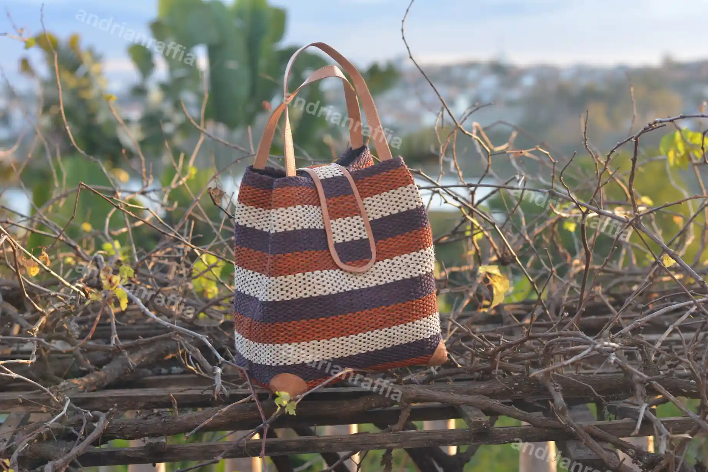

Who We Are
About Us
Raffia Madagascar Handicraft does handmade articles which are mostly in raffia such as raffia bags, raffia hats, raffia baskets..... We work with local community in village in Madagascar to provide to us the fiber of raffia which is our raw materials. And we work and have partnership with skilled women to make and produce the handmade article. Control quality is done for each articles at the end of the handling.
Handmade
Crafted with care and attention to detail
Natural raffia
Made with a locally available natural material
Made in Madagascar
Inspired by the materials and creativity of Madagascar